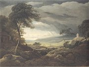
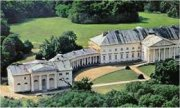

Obsah
Obrozenecká vìda
Obrozenecká literatura
Obrozenecké divadlo
+ Lidová slovesnost

Císaø Josef II.
|
ÈESKÉ NÁRODNÍ OBROZENÍ
Èeské národní obrození probíhalo od 70. let 18. století. Za jeho konec bıvá povaován rok 1848, ale charakter kultury zùstával velmi podobnı a do konce 19. století. Bìhem této doby se díky nesmírnému úsilí nìkolika buditelù zformoval èeskı národ. Obrozenci budovali národní identitu pøedevším na pøíslušnosti k èeskému jazyku a slavné historii. Èeskı nacionalismus byl velmi umírnìnı. Soustøedil se na vìdeckou práci, umìleckou tvorbu a osvìtovou èinnost. Doprovázel ho sklon k idealizaci èeské historie i celého národa. Narozdíl od podobnıch hnutí v ostatních zemích nebyl nikterak revoluèní (situace se zmìnila a v roce 1848).
Èeské vlastenectví doprovázelo posilování vztahù s ostatními slovanskımi národy, do kterıch vkládal velké nadìje u nìmeckı preromantik Johann Gottfried Herder (1744-1803), autor sbírky lidové slovesnosti Hlasy národù v písních a pojednání Myšlenky k filozofii dìjin lidstva. Zrodil se nereálnı politickı projekt slovanské vzájemnosti (Kollár), kterı pøedpokládal spojení všech slovanskıch národù pod nadvládou Ruska, jediného samostatného státu Slovanù. Realistiètìjší politiku zvolili austroslavisté (Palackı), kteøí usilovali o rovnoprávné postavení slovanskıch národù v rámci habsburské monarchie, ale i oni byli neúspìšní.
|
Periodizace
Periodizace národního obrození není jednotná. Záleí na kritériu, které si literární historikové zvolí. Podle umìleckıch smìrù rozlišujeme období klasicismu a osvícenství, preromantismu, romantismu a realismu. Podle jeho charakteru dìlíme obrození na fázi defenzivní a ofenzivní. Odlišné byly pøístupy generaèní – Dobrovskı (1. generace), Jungmann (2. generace). Vıznamné jsou také mezníky politické, domácí – nástup osvícenskıch panovníkù Marie Terezie (1740-1780) a Josefa II. (1780-1790), korunovace Leopolda II. èeskım králem (1791), metternichovskı policejní absolutismus (1815-1848), revoluce v habsburské monarchii (1848), i zahranièní – Velká francouzská revoluce (1789-1794), napoleonské války (1799-1815), revoluce v Polsku (1830) a jaro národù (1848).
|
Národní buditelé
Které národní buditele znáš? Èím se proslavili?
|
Národní buditelé
První národní buditelé si pøedsevzali splnìní mnoha úkolù. Nejdùleitìjší bylo, aby se èeština stala jazykem vìdy a vysokého umìní. Nejdøíve se zdálo, e proti latinì a nìmèinì nemá ádnou šanci. Èesky se uèili pouze nejmladší áci, ale postupnì vznikaly èeské støední školy a v èeštinì se zaèalo pøednášet také na univerzitì. Zvyšovala se i úroveò literatury a stále více spisovatelù si volilo èeštinu. Ta byla bìnım jazykem na venkovì, mìšané i šlechta ale mluvili nìmecky. Úsilí buditelù se soustøedilo hlavnì na nì. Buditelé demonstrovali své vlastenectví èeskımi jmény (Josef Krasoslav Chmelenskı, František Ladislav Èelakovskı, Karel Jaromír Erben), vlastní literární tvorbou v èeštinì a nìkteøí z nich neváhali podpoøit národní myšlenku podvodem – Rukopis královédvorskı a zelenohorskı. Jejich úsilí bylo nakonec úspìšné a èeskı národ se ve 2. polovinì 19. století zaèal emancipovat i politicky.
|

Magdalena Dobromila Rettigová
|
Jazykové obrany
První fáze národního obrození se nìkdy nazıvá termínem obranná (defenzivní).
|
Jazykové obrany
Snaha osvícenskıch panovníkù o jazykovou centralizaci (dùsledné prosazování nìmèiny) v celé habsburské monarchii vedla k obranné reakci. Obrozenci zaèali zdùrazòovat vıznam èeštiny a upozoròovali na nebezpeèí jejího úplného nahrazení nìmèinou. V této dobì zaèíná vycházet øada jazykovıch obran. Pelcl vydává (sto let po jejím vzniku) obranu Balbínovu v latinì. Další obrany u byly èeské. Nejznámìjší z nich je Obrana jazyka èeského proti zlobivım jeho utrhovaèùm od Karla Ignáce Tháma (1763-1816). Šlo o programové texty, ve kterıch buditelé propagovali èeskı národ i jazyk a srovnávali slavnou minulost èeskıch zemí se souèasnım stavem.
|

Karel Ignác Thám
|
Èeská spoleènost
Dobovı interiér
|
Èeská spoleènost
Díky josefínskım reformám se zaèala promìòovat celá spoleènost. Venkované (bıvalí nevolníci) se mohli svobodnì stìhovat a vìtšinou míøili za prací do mìst, kde se tak posiloval èeskı ivel. Mezi šlechtou pøevládalo vlastenectví zemské (pøíslušnost k èeskému území), nikoli národní (èasto ani èeštinu neovládali), ale nìkteøí šlechtici finanènì podporovali první èeské buditele. Mìstské obyvatelstvo mluvilo vìtšinou nìmecky, ale i zde padla snaha obrozencù na úrodnou pùdu. Nejtìší bylo prosadit èeštinu jako oficiální jazyk vysoké kultury a vìdy, protoe nemìla dostateènou slovní zásobu.
|

Mìšanská móda ve 40. letech 19. století
|
Poèátky èeského novináøství
Krameriovy noviny
|
Poèátky èeského novináøství
První èeské noviny vydával Karel František Rosenmüller. Nesly název Èeskı Postilión neboli Novíny èeské (1719-1772). Václav Matìj Kramerius (1753-1808) vydávání èeskıch novin obnovil. Krameriusovy c.k. praské poštovské noviny (1789-1825), pùvodní název Schönfeldské c.k. Praské noviny, pozdìji Krameriusovy c.k. vlastenecké noviny, mìly literární pøílohu Praskı posel. Kramerius byl rovnì majitelem knihkupectví a nakladatelství Èeská expedice, vıznamného centra obrozenecké kultury. Dùleitou roli hrála literární pøíloha Praskıch novin Èeská vèela (1834-1850) a beletristické èasopisy jako Hlasatel èeskı, Prvotiny pìknıch umìní, Rozmanitosti, Jindy a nyní, Kvìty, pozdìji Kvìty èeské (1834-1850), Èechoslav a Dobroslav. V jejich redakcích pùsobil Èelakovskı, Tyl nebo Karel Havlíèek Borovskı.
|
Èeskı Postilión, první èeské noviny
|
Vıtvarné umìní

Josef Max: František I. (Hold èeskıch stavù)

Josef Mánes: Hanaèka
|
Architektura, sochaøství, malíøství
Èeské vıtvarné umìní se v první fázi národního obrození vıznamnì nelišilo od svìtového. Umìlci se hlásili ke klasicismu a empíru, pozdìji i preromantismu a romantismu. V mìšanském prostøedí se prosadil biedermeier. Vlastenecké námìty se objevují velmi brzy. Typické jsou vıjevy z èeské historie a bájné minulosti, idylické obrázky ivota na venkovì nebo krajináøské scenérie. Portréty obrozencù malovali Antonín Machek (1775-1844), František Tkadlík (1786-1840) a František Horèièka (1776-1856). Dochovaly se i portréty fotografické (daguerrotypie). Sochaøství se vìnoval Václav Prachner (1784-1832) a Josef a Emanuel Maxové, krajinomalbì Karel Postl (1769-1818) a František Xaver Rektoøík (1793-1851) a vedutám Vincent Morstadt (1802-1875). Cyklus lidovıch krojù nakreslil Josef Mánes (1820-1871), pøedním malíøem byl rovnì jeho bratr Quido Mánes (1828-1880) a otec Antonín Mánes (1784-1843). K nejvıznamnìjším stavbám tohoto období patøí klasicistní zámek Kaèina a Nosticovo divadlo v Praze nebo mìstské komplexy Terezín, Josefov a Mariánské Láznì.
Morstadt: Pohled na Koòskı trh
|

Rektoøík: Chalupa na kopci

Tkadlík: Sv. Václav a sv. Ludmila pøi mši

Antonín Mánes: Køivoklát a Kokoøín v bouøi
|
Èeskı jazyk
Èesko-nìmeckı slovník Josefa Jungmanna, heslo wlast
|
Èeskı jazyk
Nejvìtší zásluhu na rozvoji èeského jazyka mìl Josef Jungmann. Jeliko èeština nemìla v jeho dobì dostateènou slovní zásobu, rozhodl se sepsat Èesko-nìmeckı slovník (5 dílù, 120 000 hesel), ve kterém hledal k nìmeckım slovùm chybìjící èeské ekvivalenty. Vyuíval zapomenutá slova ze starıch èeskıch textù, pøejímal vırazy z cizích jazykù (pøedevším slovanskıch) a nìkterá slova novì tvoøil (názvy mìsícù). Kvalitu èeštiny prakticky ovìøoval na èetnıch pøekladech (Ztracenı ráj, Atala...). Jungmannùv jazykovı cit vyniká ve srovnání s puristickımi pokusy jinıch buditelù, jejich nová slova se neujala (podnosnice liboèudná, nosoèistoplena...), nebo s neúspìšnım projektem Jana Kollára, kterı se snail spojit èeštinu se slovenštinou.
Pøi vytváøení spisovného jazyka se obrozenci obrátili k renesanèní èeštinì doby Veleslavínovy, pøeskoèili tak nìkolik staletí pøirozeného vıvoje. Z náøeèí jim bylo nejbliší støedoèeské.
|
Rùzné názory na novou podobu èeského pravopisu se odrazily ve vzniku vlasteneckıch skupin, které spolu vzájemnì soupeøily o vliv (ypsilonisté, iotisté, ouáci, auáci, wisté atd.). Která z nich nakonec vyhrála?
Obdobnı proces jako v Èechách probíhal také na Slovensku, nejvıraznìjší postavou slovenského národního obrození byl ¼udovít Štúr.
|
Internetové stránky
Hrejsa: Toleranèní patent z 13. øíjna 1781
Kramerius: elezná košile
Herder: Slovanské národy
Bednáø: Toleranèní patent
Denis: Konec samostatnosti èeské
Herben: Otázka náboenská v našem probuzení
¼udovít Štúr, slovenskı buditel
Èeské umìní 19. stol., Trojskı zámek, Galerie hl.m. Prahy
Sbírka èeského malíøství 19. století, Galerie ostrava
Kaèina, klasicistní zámek
Josef Mánes: Èerven (orloj)
|
Doporuèená èetba
Blaíèková-Horová, Nadìda: Malíøská rodina Mánesù, Národní galerie, Praha 2002 (katalog k vıstavì)
Èernı, František: Obrázky z dob našeho probuzení, Praha 1890
Dìjiny èeského vıtvarného umìní III, 1780-1890
Hanzal, J: Od baroka k romantismu, Ke zrození novodobé èeské kultury, Praha 1971
Haubelt, J.: Èeské osvícenství, Praha 1986
Horálek, Karel: Folklór a svìtová literatura, Academia, Praha 1979
Hroch, Miroslav: Na prahu národní existence, Mladá fronta, Praha 1999
Jirásek, Alois: F.L.Vìk (román)
Johanides, Josef: František Vladislav Hek, Melantrich, Praha 1976
Koèí, J.: Èeské národní obrození, Praha 1988
Langhamerová, Jiøina: Lidové kroje z Èeské republiky, NLN, Praha 2001
Lnìnièková, Jitka: Èeské zemì v dobì pøedbøeznové, 1795-1848, Libri, Praha 1999
Macura, Vladimír: Znamení zrodu, Èeské obrození jako kulturní typ, Èeskoslovenskı spisovatel, Praha 1983
Macura, V.: Èeskı sen
Máchal, J.: Slovanské literatury
Novotnı, Jan: Matìj Václav Kramerius, Melantrich, Praha 1973
Petráò, J.: Poèátky èeského národního obrození (1770-1791), Praha 1990
Plch, Jaromír: Antologie z èeské literatury národního obrození, SPN, Praha 1978
Polák, Josef: Èeská literatura 19. století
Praák, A.: Èeské obrození, Praha 1947
Staòková, Baran: Lidové umìní z Èech, Moravy a Slezska, Praha 1947
Vondruškovi, Alena a Vlastimil: Tradice lidové tvorby, Artia, Praha 1988
|
Pøiprav si referát o nìkteré z uvedenıch knih nebo internetovıch stránek.
Jak se lišil pravopis v 19. století od souèasného?
Èasopis Èeská vèela

Èeskı klasicistní zámek Kaèina
|
|